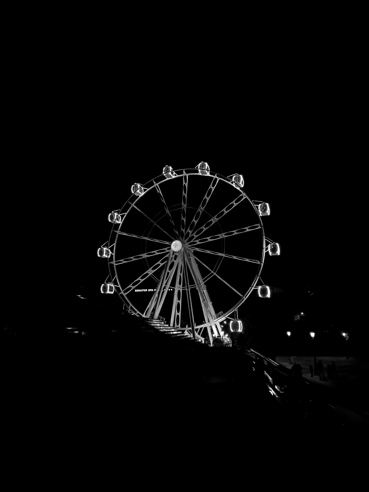
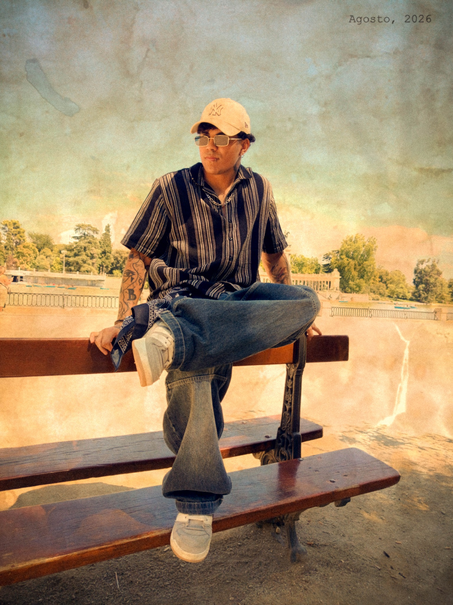

CALi SE MUEVEVER PROYECTO ↗
CAMPAÑA / 2021
Cali se Mueve
Dirección creativa · Diseño · Comunicación cultural

Ideas que se convierten en imagen
Diseño gráfico, edición y narrativa audiovisual para crear imágenes con identidad propia.
Explorar trabajos ↓Dirección creativa
Concepto, identidad y piezas que construyen una campaña completa.
Dirección creativa · Diseño · Comunicación cultural
Composición visual
Manipulación, composición y construcción de mundos visuales.
Narrativa audiovisual
Montaje, ritmo, sonido, color y postproducción para contar historias.
Premiere Pro · After Effects · Corrección de color
Tratamiento fotográfico
Retoque, color, limpieza y transformación de imágenes.
Diseño gráfico
Carteles, contenido digital, publicaciones y piezas de comunicación.
Creación digital
Ilustraciones, personajes y exploración de estilos visuales.
Diseñador gráfico + creador audiovisual
Escribe aquí una pequeña descripción personal sobre quién eres, tu forma de trabajar, tus intereses y qué te mueve como diseñador y creador audiovisual.
